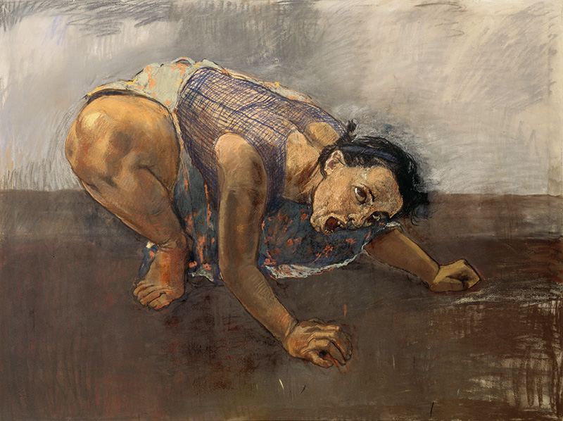
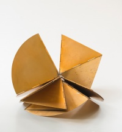

Autonomia, corpo e participação
A autonomia da obra torna-se insuficiente quando matéria, duração e corpo participante passam a constituí-la.
Aula 6 · 05 de setembro de 2026 · 150 minutos
Fechamento da disciplina a partir de Katy Hessel
Onde chegamos
Chegamos à Aula 6 depois de examinar matéria, corpo, participação, autoria, arquivo, colonialidade, figuração, fotografia, pintura e memória. O fechamento não organiza esses encontros como uma marcha ascendente. Pergunta o que cada obra obrigou a reconsiderar sobre a própria história da arte.
Em Katy Hessel, recuperar artistas não é um suplemento decorativo ao cânone. É deslocar os critérios pelos quais uma obra foi reconhecida, exibida, preservada, ensinada e valorizada.
Seis teses de trabalho
A autonomia da obra torna-se insuficiente quando matéria, duração e corpo participante passam a constituí-la.
Autoria é uma posição em disputa, não uma origem individual intacta.
Uma obra crítica altera as condições sob as quais a violência pode ser vista.
Figurar é fabricar condições de presença, autoridade e relação.
A pintura contemporânea faz do passado uma força em disputa no presente.
A história da arte é uma infraestrutura que distribui valor, presença e esquecimento.
Uma história, três narrativas em disputa
Em “Pintura modernista”, Greenberg descreve a arte moderna como investigação de seus próprios meios. A pintura afirmaria planaridade, cor, superfície e limites específicos, em vez de imitar literatura, ilusão espacial ou escultura.
Para Danto, o “fim da arte” é o encerramento de uma história que supunha uma direção necessária para a arte. Depois disso, a arte continua, mas nenhum estilo ou meio pode reivindicar sozinho a forma histórica do presente.
As duas formulações foram feitas a partir de um debate norte-atlântico. Elas ajudam a localizar problemas, mas não são um relógio universal pelo qual todas as modernidades e contemporaneidades devam ser medidas.
Não tratamos contemporâneo como um período que simplesmente sucede o moderno numa data universal. Ele designa uma condição de pluralidade, conflito entre meios, redes institucionais e disputas de narrativa, na qual o modelo de progresso formal deixa de explicar o campo inteiro.
Isso não torna o modernismo irrelevante. Ao contrário: suas questões sobre forma, meio, autonomia, projeto e ruptura continuam atuando nas obras contemporâneas, mas deixam de ser a única chave de valor.
Modernismos brasileiros: tradução, conflito e invenção
Katy Hessel situa o modernismo brasileiro entre transformações políticas, sociais e culturais específicas. Em vez de uma cópia de vanguardas europeias, a antropofagia propõe digerir e transformar influências estrangeiras para produzir uma linguagem brasileira. Esse gesto não elimina suas contradições de classe, raça e colonialidade, mas impede a fantasia de uma simples recepção passiva.
Por isso, o modernismo brasileiro não deve ser ensinado como etapa local de uma sequência Europa, Estados Unidos, Brasil. Suas temporalidades são construídas por independência, abolição, industrialização, circulação internacional, desigualdade racial, projetos nacionais e ditaduras.
O quadro inspira o Manifesto Antropófago. A questão não é importar a vanguarda, mas metabolizar influências em uma linguagem nacional, ainda atravessada pelas contradições coloniais que afirma enfrentar.
O neoconcretismo recusa o dogmatismo matemático do concretismo e desloca forma para articulação, corpo e participação. Não é “depois” do modernismo: é uma disputa interna sobre o que uma forma moderna pode fazer.
Páginas, cor, manipulação e espaço transformam leitura em acontecimento. A obra tensiona a separação entre pintura, escultura, livro e experiência antes que a palavra “contemporâneo” resolva o problema.
Em contexto de ditadura e censura, corpo e fotografia tornam-se protesto e vestígio. A obra desloca a discussão da autonomia do meio para condições políticas de fala, silêncio e sobrevivência.
Proposição de trabalho
“Infraestrutura” é um dispositivo didático da disciplina, não um termo atribuído literalmente a Hessel. Ele nomeia livro, arquivo, museu, exposição, currículo, mercado, crítica, imagem de obra, catálogo, conservação e instituição de ensino.
Uma narrativa altera o que se estuda, coleciona, restaura, financia, publica e ensina.
Katy Hessel: leitura e posição
Hessel propõe que estudar história da arte é estudar o mundo por mediações situadas. Artistas, autoras, curadoras, professoras e instituições trabalham em lugares e tempos específicos. Isso não relativiza obra, documento ou pesquisa. Desloca o problema para a responsabilidade do recorte.
Um livro, museu, curso ou arquivo precisa selecionar. O rigor não está em fingir uma totalidade impossível, mas em tornar escolhas explicitáveis, criticáveis e revisáveis.
Retrospectiva como operação
Eva Hesse também exige pensar arquivo e conservação; Doris Salcedo implica instituição; Zanele Muholi implica figuração e futuro; Judith Scott recoloca matéria, classificação e autoridade. Uma constelação não dissolve diferenças, mas torna suas relações argumentáveis.
Narrativa, instituição e valor
Organizam categorias, cronologias, autorias e critérios de importância.
Transformam critérios em coleção, currículo, arquivo, preservação e circulação.
Repercutem em mercado, preço, catálogo, crédito e memória pública.
Artistas, pesquisadoras, curadoras, professoras e públicos podem alterar o circuito.
O circuito não é uma máquina linear ou uma conspiração única. É uma relação de reforço, disputa e transformação entre narrativas e instituições.
Uma imagem de obra, uma legenda, um portfólio, uma reprodução editorial ou um acervo digital também produzem valor e memória. Enquadramento, edição, crédito, metadado e acesso determinam como algo circulará e o que poderá ser pesquisado no futuro.
A estrutura herdada
Hessel recorda que narrativas de referência organizaram exclusões duradouras: Giorgio Vasari incluiu poucas mulheres entre centenas de artistas homens; as primeiras edições de E. H. Gombrich e H. W. Janson não incluíam artistas mulheres; John Berger analisou a representação de mulheres sem tratar de uma obra de autoria feminina.
O problema não se esgota em quem falta. Trata-se de perguntar que tipo de obra, meio, autoria e valor parecem naturalmente centrais quando essas histórias se tornam currículos, coleções e preços.
Uma ambivalência metodológica
Hessel reconhece que seu livro mantém uma estrutura predominantemente ocidental, linear e iniciada no Renascimento, próxima à forma que procura contestar. A escolha oferece inteligibilidade, mas também delimita aquilo que consegue mostrar.
Não existe forma sem recorte. A questão não é abandonar toda organização, mas impedir que a organização se apresente como neutra, natural ou definitiva.
Estudo de caso: Paula Rego

1994. Pastel sobre papel montado em alumínio.
Hessel relata a residência de Paula Rego na National Gallery em 1990. A artista identifica a coleção como masculina e escolhe trabalhar dentro dela, não para aceitá-la como cenário neutro, mas para alterar relações de figura, desejo, autoridade e narrativa.
Em diálogo com o retábulo de Carlo Crivelli, Paula Rego reconfigurou personagens femininas tradicionalmente passivas ou subordinadas. A operação não é simplesmente acrescentar mulheres a um museu. É tornar visível que o museu já organizava posições de gênero, e que elas podem ser reescritas por uma obra.
A imagem apresentada é Mulher-cão, não o mural realizado durante a residência. Ela permite observar corpo, gesto e agência em Paula Rego, enquanto o episódio da National Gallery dá a dimensão institucional da discussão.
As obras voltam como problemas
Historiografia não vem depois da obra para explicá-la. Ela participa das condições pelas quais a obra pode ser vista, preservada e disputada.
Fotografia e escrita de história
Na disciplina, fotografia apareceu como vestígio de ação, arquivo de comunidade e intimidade, documentação insuficiente de uma instalação ou participação, autorretrato, articulação de futuro e ecologia visual que atravessa a pintura.
Para quem trabalha com fotografia, produzir, editar e fazer circular uma imagem implica decisões sobre contexto, autoria, crédito, acesso e memória.
Constelação apresentada pela aula
Em vez de pedir que a turma construa uma constelação, esta aula apresenta uma, como exercício de reflexão historiográfica. Ela não é modelo definitivo. Serve para mostrar como uma sequência de obras pode formular uma hipótese, sustentar-se por evidências e declarar o próprio limite.
Dobradiças, planos e resistência material transformam uma forma geométrica em negociação corporal. A crítica ao objeto autônomo ocorre dentro, e contra os limites, da linguagem construtiva.
Corpo, lâmina e fotografia fazem da forma um vestígio sob censura. A obra desloca a pergunta do meio para as condições políticas de fala, silêncio e registro.
Cadeiras comprimidas e arquitetura tornam perda e violência uma situação espacial que nenhuma contemplação confortável consegue resolver.
Autorretrato e arquivo comunitário produzem uma imagem voltada ao futuro. A figura não apenas aparece: reivindica condições de memória, relação e autoridade.
Obras da constelação

Lygia Clark, 1960.
Imagem e créditos conforme apresentação da disciplina.

Anna Maria Maiolino, 1974.
Imagem e créditos conforme apresentação da disciplina.

Doris Salcedo, 2003.
Imagem e créditos conforme apresentação da disciplina.

Zanele Muholi, 2019. Série Somnyama Ngonyama.
Imagem e créditos conforme apresentação da disciplina.
A sequência liga participação, censura, instituição e arquivo. Ela mostra que uma obra circula por objetos, fotografias, museus, documentos, exposições, cuidados de preservação e regimes de visibilidade. A história da arte contemporânea não é exterior a essas mediações: ela é produzida por elas.
Dossiê argumentativo final
Reúnam as seis entradas produzidas ao longo do curso. O objetivo não é criar uma síntese pacificadora, mas demonstrar como uma leitura se tornou mais precisa por confronto, revisão e atribuição rigorosa.
Escrevam uma página final respondendo: que história da arte minha sequência produz, e que escolhas ela assume?
Suspensão final
Voltemos à pergunta de abertura: o que muda quando a arte contemporânea é contada por meio das artistas? A resposta mais precisa não é que aparecem apenas nomes novos. Mudam os problemas, os meios, as instituições e as relações de poder que definem o que pode ser chamado de arte contemporânea.
Referências e créditos
Leitura-base: HESSEL, Katy. A história da arte sem os homens. Capítulo 6, “Modernismo nas Américas”; capítulo 9, “Brasil no pós-guerra”; e Parte Cinco, especialmente “Onde estamos agora?”.
Textos em diálogo: GREENBERG, Clement. Modernist Painting (1960); DANTO, Arthur C. The End of Art: A Philosophical Defense (1998); BIBLIOTECA NACIONAL DIGITAL. O Modernismo.
Obra reproduzida: Paula Rego, Mulher-cão [Dog Woman], 1994. Pastel sobre papel montado em alumínio.
As informações e citações atribuídas a Hessel seguem a leitura-base. “Infraestrutura”, “constelação” e “inclusão aditiva ou reescrita estrutural” são dispositivos pedagógicos da disciplina, não termos literais da autora.